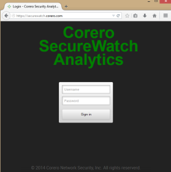

Show search and navigation tools
The Corero SecureWatch Analytics Application is designed to assist with the analysis of Security Conditions that are detected by Corero Network Securities Smartwall Appliances. This application is available via a globally accessible web portal or via a local web server that is hosted on a SecureWatch Appliance at the customer’s site. Once logged into the application you can easily review and drilldown on the current, and historical, forensic data that was reported by all of the Smartwall Appliances that are protecting your Security Infrastructure.
Security partners are presented with a web portal that allows them to easily maintain multiple customers from one easy to use interface. The only requirements to use this application are that you have a supported web browser, credentials to login to the application, and are a Corero customer or partner with Corero Smartwall appliances that you need to monitor.
Corero SecureWatch Analytics is available via a globally accessible web portal. The portal is a great tool for reviewing Security Event information from your all of your Corero Security Appliances from the convenience of your favorite browser from most wherever you are. For partners who are maintaining Corero Security Appliances for multiple customers the portal application allows for easy transitioning from one customer to the next.
